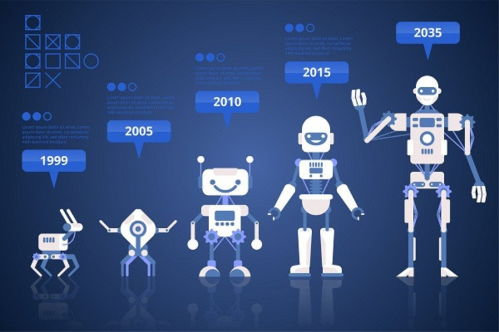

¿Qué es la Inteligencia Artificial?
La inteligencia es la capacidad de las máquinas de poder realizar actividades que requieren "Inteligencia", como aprender o tomar desiciones.
Empezar
Historia de la IA

La inteligencia artificial (IA) surgió en los años 50 con Alan Turing y la Conferencia de Dartmouth. Evolucionó desde sistemas basados en reglas hasta el aprendizaje profundo actual. Hoy, la IA transforma industrias con modelos avanzados de NLP y aplicaciones en visión, lenguaje y automatización.